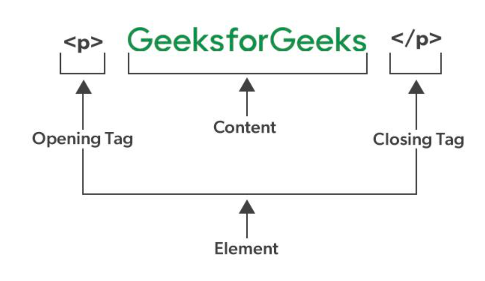

HTML Tutorial
HTML stands for HyperText Markup Language. It is the standard language used to create and structure content on the web. It tells the web browser how to display text, links, images, and other forms of multimedia on a webpage. HTML sets up the basic structure of a website, and then CSS and JavaScript add style and interactivity to make it look and function better.
- How Does HTML Work? - HTML documents are plain-text files saved with an html extension.. Browsers read these documents, interpret the markup (tags and attributes), and render the formatted content on your screen.
- It forms the building blocks of all websites and is complemented by CSS for style and JavaScript for interactivity.
In a nutshell, HTML is all about organizing and displaying information on a webpage. We can think of it as the bones or structure of a webpage.
Basic HTML Code Example

Table of Content
Why Learn HTML?
Here are 5 common reasons to learn HTML:
- Build Websites: HTML is the basic building block for creating any website. Learning HTML can help you pursue a career in web development.
- Customize Content: Allows you to edit or tweak web pages, emails, or templates to fit your needs.
- Understand how the web works: Helps you grasp how the internet works and how web pages are structured.
- Employment Opportunities: According to Bureau of Labor Statistics projects that employment for web developers will grow 16% between 2022-2032, which is much faster than the average across all occupations.
- Learn Easily: HTML is beginner-friendly, making it a great first step into the world of coding and technology
Features of HTML
- It is easy to learn and easy to use.
- is platform-independent.
- Images, videos, and audio can be added to a web page.
- Hypertext can be added to the text.
- It is a markup language.
HTML Element and HTML Tag
HTML Element and HTML Tags are related but distinct. An HTML element is the complete structure, including the opening tag, content (if any), and the closing tag (if applicable).
On the other hand, A tag is the actual keyword or name enclosed in angle brackets (< >) that tells the browser what kind of content to expect.

HTML Page Structure
The basic structure of an HTML page is shown below. It contains the essential building-block elements (i.e. doctype declaration, HTML, head, title, and body elements) upon which all web pages are created.

- !doctype html - This is the document type declaration, not a tag. It declares that the document is an HTML5 document.
- html - This is called the HTML root element. All other elements are contained within it.
- head - The head tag contains the “behind the scenes” elements for a webpage.
Typical elements inside the head include:
- title: The title is what is displayed on the top of your browser when you visit a website and contains the title of the webpage that you are viewing.
- h2- The h2 tag is a second-level heading tag.
- p: -The p; tag represents a paragraph of text
- bodyThe body tag is used to enclose all the visible content of a webpage. In other words, the body content is what the browser will show on the front end.
An HTML document can be created using HTML text editor. Save the text file using the “.html” or “.htm” extension. Once saved as an HTML document, the file can be opened as a webpage in the browser.
Note: Basic/built-in text editors are Notepad (Windows) and TextEdit (MacOS). Other advanced text editors include Sublime Text, Visual Studio Code, Froala, etc.
Web Browsers
Unlike other programming languages, HTML does not show output on the compiler. Web browsers show the results of an HTML code.
It reads HTML files and determines how to show content with the help of HTML tags. Any web browser (Google, Safari, Mozilla Firefox, etc) can be used to open a . HTML file and view the results.

Html History
€
Currently, we are using HTML5, which is the latest and most advanced version of HTML.
HTML was initially created by Tim Berners-Lee in 1991 as a way to share and structure documents on the web.
The first-ever version was HTML 1.0, a basic and limited version. However, the first standardized version, HTML 2.0, was published in 1995, laying the foundation for web development as we know it today

Advantages of HTML
- HTML is used to build websites.
- It is supported by all browsers.
- It can be integrated with other languages like CSS,JavaScript , etc.
Disadvantages of HTML
- HTML can only create static web pages. For dynamic web pages, other languages have to be used.
- A large amount of code has to be written to create a simple web page.
- The security feature is not good.
Conclusion
In conclusion, mastering HTML is a fundamental step in your web development journey. This guide serves as a comprehensive resource for understanding HTML, from the basics to more advanced topics.
Remember, HTML is more than just a markup language - it`s a powerful tool for creating engaging, accessible, and SEO-friendly websites.
To learn more about HTML, visit HTML Tutorial Page
go to top